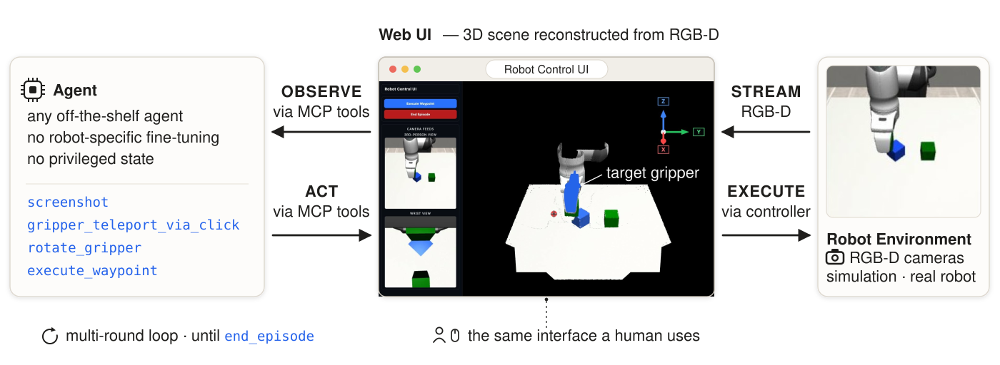
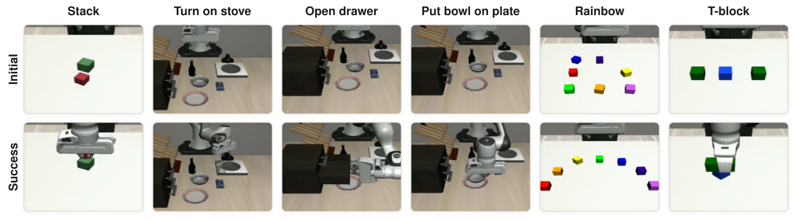

Your coding/computer-use agent is secretly a robot control agent.

execute_waypoint to invoke a simple PI
(Proportional-Integral) controller that moves the real gripper to that pose.
This observe-act loop repeats until the agent calls end_episode.
The UI reconstructs the 3D scene from RGB-D cameras. The MCP Tools section
below covers the documentation and illustrations of all available tools.
Videos showing episodes of VIA with Claude Code Fable completing different tasks zero-shot. The agent completes a task via a loop of observation, thinking, and finally a tool call that returns a new observation, until it reaches a terminal condition.
Highlights
We use a suite of six tasks drawn from different benchmarks, together covering diverse manipulations.

We evaluate VIA using two families of agents:
The reasoning effort is set to xhigh for all agents.
On top of a shared system prompt on how to use the interface, we consider two variants of task-specific prompts for each task:
We disable memory read/write for the agents so that they cannot gain cross-episode experience.
| Task | CC-Opusminimal | CC-Fableminimal | Codex-5.5minimal | Codex-5.6-Solminimal | CC-Opusdetailed | Codex-5.5detailed | |
|---|---|---|---|---|---|---|---|
| Stack | 100% | 100% | 100% | 100% | — | — | |
| Turn on stove | 100% | 100% | 90% | 90% | 100% | 90% | |
| Open drawer | 70% | 90% | 30% | 30% | 100% | 30% | |
| Put bowl on plate | 60% | 100% | 40% | 80% | 100% | 30% | |
| Rainbow | 80% | 100% | 60% | 50% | — | — | |
| T-block | 10% | 40% | 40% | 20% | — | — | |
| Overall | 70% | 88% | 60% | 62% | 100% | 50% |
"—" marks combinations we do not evaluate; bold marks the best result per task within each prompt variant; the Overall row averages each column over its evaluated tasks.
| Task | CC-Opusminimal | CC-Fableminimal | Codex-5.5minimal | Codex-5.6-Solminimal | CC-Opusdetailed | Codex-5.5detailed | |
|---|---|---|---|---|---|---|---|
| Stack | 28 | 40 | 26 | 32 | — | — | |
| Turn on stove | 36 | 39 | 33 | 31 | 43 | 32 | |
| Open drawer | 47 | 38 | 21 | 33 | 46 | 30 | |
| Put bowl on plate | 59 | 53 | 78 | 66 | 48 | 57 | |
| Rainbow | 159 | 143 | 176 | 217 | — | — | |
| T-block | 81 | 89 | 52 | 122 | — | — | |
| Overall | 68 | 67 | 64 | 84 | 46 | 40 |
| Task | CC-Opusminimal | CC-Fableminimal | Codex-5.5minimal | Codex-5.6-Solminimal | CC-Opusdetailed | Codex-5.5detailed | |
|---|---|---|---|---|---|---|---|
| Stack | $2.4 | $7.3 | $1.5 | $1.6 | — | — | |
| Turn on stove | $4.1 | $8.9 | $2.5 | $2.2 | $5.7 | $3.3 | |
| Open drawer | $7.4 | $7.5 | $1.4 | $1.1 | $6.5 | $1.7 | |
| Put bowl on plate | $7.5 | $11.8 | $8.1 | $2.9 | $5.0 | $4.9 | |
| Rainbow | $26.0 | $36.1 | $23.4 | $6.1 | — | — | |
| T-block | $9.7 | $19.2 | $6.1 | $10.5 | — | — | |
| Overall | $9.5 | $15.1 | $7.2 | $4.1 | $5.7 | $3.3 |
CC costs are read directly from each episode's session cost, while Codex costs are estimated from token usage and listed API pricing.